<meta charset="utf-8" />
<title>Guía Secure CRM</title>
<link rel="preconnect" href="https://fonts.googleapis.com" />
<link rel="preconnect" href="https://fonts.gstatic.com" crossorigin />
<link
  rel="stylesheet"
  href="https://fonts.googleapis.com/css2?family=Bricolage+Grotesque:wght@500;600;700&family=Inter:wght@400;500;600&family=JetBrains+Mono:wght@400;500&display=swap"
/>

<style>
  :root {
    --paper: #ffffff;
    --paper-2: #f4f8f5;
    --ink: #0f2318;
    --muted: #4f625a;
    --faint: #879a90;
    --line: #e5ede8;
    --line-2: #d3e0d8;
    --brand: #04602f;
    --brand-deep: #0a3d1f;
    --brand-2: #0f5228;
    --mint: #a8f0c8;
    --crit: #b91c1c;
    --high: #c2410c;
    --med: #b45309;
    --ok: #047857;
    --display: "Bricolage Grotesque", system-ui, sans-serif;
    --body: "Inter", system-ui, sans-serif;
    --mono: "JetBrains Mono", ui-monospace, monospace;
    --maxw: 940px;
  }
  * {
    box-sizing: border-box;
  }
  html {
    scroll-behavior: smooth;
  }
  @media (prefers-reduced-motion: reduce) {
    html {
      scroll-behavior: auto;
    }
    *,
    *::before,
    *::after {
      animation-duration: 0.001ms !important;
      transition-duration: 0.001ms !important;
    }
  }

  body {
    margin: 0;
    background: var(--paper);
    color: var(--ink);
    font-family: var(--body);
    line-height: 1.65;
    -webkit-font-smoothing: antialiased;
    scroll-padding-top: 72px;
  }
  ::selection {
    background: var(--mint);
    color: var(--brand-deep);
  }
  a {
    color: var(--brand);
    text-decoration: none;
  }
  a:focus-visible,
  button:focus-visible {
    outline: 2px solid var(--brand);
    outline-offset: 3px;
    border-radius: 3px;
  }

  .wrap {
    max-width: var(--maxw);
    margin: 0 auto;
    padding: 0 28px;
  }

  /* ---------- Barra superior verde (aloja el logo) ---------- */
  header {
    position: sticky;
    top: 0;
    z-index: 40;
    background: var(--brand-deep);
    color: #fff;
    border-bottom: 1px solid rgba(255, 255, 255, 0.08);
  }
  .nav {
    display: flex;
    align-items: center;
    justify-content: space-between;
    gap: 20px;
    height: 58px;
  }
  .brand {
    display: flex;
    align-items: center;
    gap: 14px;
    min-width: 0;
  }
  .logo,
  .logo-uvg {
    height: 26px;
    width: auto;
    display: block;
  }
  .logo-uvg {
    height: 24px;
  }
  .brand .sep {
    width: 1px;
    height: 22px;
    background: rgba(255, 255, 255, 0.25);
    flex-shrink: 0;
  }
  .navlinks {
    display: flex;
    gap: 2px;
  }
  .navlinks a {
    color: rgba(255, 255, 255, 0.66);
    font-size: 14px;
    font-weight: 500;
    padding: 7px 12px;
    border-radius: 7px;
    transition:
      background 0.15s,
      color 0.15s;
  }
  .navlinks a:hover {
    background: rgba(255, 255, 255, 0.08);
    color: #fff;
  }
  @media (max-width: 720px) {
    .navlinks {
      display: none;
    }
  }

  /* ---------- Tipografía ---------- */
  h1,
  h2,
  h3 {
    font-family: var(--display);
    letter-spacing: -0.02em;
    text-wrap: balance;
    margin: 0;
    color: var(--ink);
  }
  h1 {
    font-size: clamp(2.2rem, 5.5vw, 3.4rem);
    line-height: 1.05;
    font-weight: 700;
  }
  h2 {
    font-size: clamp(1.5rem, 3.2vw, 2.05rem);
    font-weight: 600;
  }
  h3 {
    font-size: 1.1rem;
    font-weight: 600;
  }
  p {
    margin: 0;
  }
  .eyebrow {
    display: inline-flex;
    align-items: center;
    gap: 10px;
    font-size: 12px;
    font-weight: 600;
    letter-spacing: 0.16em;
    text-transform: uppercase;
    color: var(--brand);
  }
  .eyebrow::before {
    content: "";
    width: 26px;
    height: 2px;
    background: var(--brand);
    display: inline-block;
  }
  .lead {
    font-size: 1.12rem;
    color: var(--muted);
    max-width: 64ch;
  }

  section {
    padding: 60px 0;
    border-top: 1px solid var(--line);
  }
  .sec-head {
    margin-bottom: 30px;
  }
  .sec-head h2 {
    margin-top: 12px;
  }

  /* ---------- Hero (editorial, blanco) ---------- */
  .hero {
    padding: 74px 0 66px;
    border-top: none;
    position: relative;
  }
  .hero .grid {
    display: grid;
    grid-template-columns: 1.7fr 1fr;
    gap: 40px;
    align-items: end;
  }
  @media (max-width: 800px) {
    .hero .grid {
      grid-template-columns: 1fr;
      gap: 28px;
    }
  }
  .hero h1 {
    margin: 22px 0 0;
  }
  .hero h1 .u {
    background: linear-gradient(transparent 62%, rgba(168, 240, 200, 0.55) 62%);
    padding: 0 2px;
  }
  .hero .lead {
    margin-top: 22px;
    font-size: 1.22rem;
  }
  .hero .aside {
    border-left: 2px solid var(--line-2);
    padding-left: 20px;
  }
  .hero .aside dt {
    font-size: 11px;
    font-weight: 600;
    letter-spacing: 0.08em;
    text-transform: uppercase;
    color: var(--faint);
  }
  .hero .aside dd {
    margin: 2px 0 16px;
    font-size: 14px;
    color: var(--muted);
  }
  .hero .aside dd:last-child {
    margin-bottom: 0;
  }
  .btns {
    display: flex;
    flex-wrap: wrap;
    gap: 12px;
    margin-top: 32px;
  }
  .btn {
    display: inline-flex;
    align-items: center;
    gap: 8px;
    padding: 11px 20px;
    border-radius: 9px;
    font-weight: 600;
    font-size: 14px;
    cursor: pointer;
    border: 1px solid transparent;
    transition:
      background 0.15s,
      border-color 0.15s;
    font-family: var(--body);
  }
  .btn-primary {
    background: var(--brand);
    color: #fff;
  }
  .btn-primary:hover {
    background: var(--brand-2);
  }
  .btn-ghost {
    border-color: var(--line-2);
    color: var(--ink);
    background: var(--paper);
  }
  .btn-ghost:hover {
    background: var(--paper-2);
  }

  /* ---------- Callout ---------- */
  .callout {
    border: 1px solid var(--line-2);
    border-radius: 12px;
    padding: 18px 20px;
    margin: 22px 0;
    background: var(--paper-2);
  }
  .callout.warn {
    border-color: #f0d3a8;
    background: #fdf6ea;
  }
  .callout .t {
    font-weight: 600;
    margin-bottom: 4px;
    color: var(--ink);
  }
  .callout p {
    color: var(--muted);
    font-size: 14.5px;
  }

  /* ---------- Declaración ---------- */
  .decl {
    border: 1px solid var(--line);
    border-radius: 14px;
    padding: 22px 24px;
    background: var(--paper);
    max-width: 66ch;
    box-shadow: 0 1px 2px rgba(10, 61, 31, 0.04);
  }
  .decl h3 {
    font-size: 15px;
    margin-bottom: 12px;
  }
  .decl ul {
    list-style: none;
    padding: 0;
    margin: 0;
  }
  .decl li {
    padding: 9px 0;
    color: var(--muted);
    font-size: 14.5px;
    border-bottom: 1px dashed var(--line-2);
  }
  .decl li:last-child {
    border: none;
  }
  .decl .fill {
    color: var(--faint);
  }
  .decl blockquote {
    margin: 14px 0 0;
    padding-top: 14px;
    border-top: 1px solid var(--line);
    font-style: italic;
    color: #63756b;
    font-size: 13.5px;
  }

  /* ---------- Código ---------- */
  pre {
    background: var(--brand-deep);
    border-radius: 10px;
    padding: 16px 18px;
    overflow-x: auto;
    margin: 0;
  }
  code {
    font-family: var(--mono);
    font-size: 13px;
  }
  pre code {
    color: #cdeedc;
    line-height: 1.75;
    white-space: pre;
  }
  .kbd {
    font-family: var(--mono);
    font-size: 12.5px;
    background: var(--paper-2);
    border: 1px solid var(--line-2);
    border-radius: 5px;
    padding: 1px 6px;
    color: var(--brand);
  }
  .install {
    display: grid;
    grid-template-columns: 1fr 1fr;
    gap: 18px;
  }
  @media (max-width: 680px) {
    .install {
      grid-template-columns: 1fr;
    }
  }
  .install h3 {
    font-size: 13px;
    margin-bottom: 10px;
    color: var(--muted);
    font-family: var(--body);
    font-weight: 600;
    letter-spacing: 0.02em;
  }

  /* ---------- Tabs de herramientas ---------- */
  .tabs {
    display: flex;
    gap: 4px;
    border-bottom: 1px solid var(--line);
    margin-bottom: 4px;
    flex-wrap: wrap;
  }
  .tab {
    appearance: none;
    background: none;
    border: none;
    font-family: var(--display);
    font-weight: 600;
    font-size: 15px;
    color: var(--faint);
    padding: 12px 18px 14px;
    cursor: pointer;
    position: relative;
    letter-spacing: -0.01em;
  }
  .tab:hover {
    color: var(--muted);
  }
  .tab[aria-selected="true"] {
    color: var(--brand);
  }
  .tab[aria-selected="true"]::after {
    content: "";
    position: absolute;
    left: 12px;
    right: 12px;
    bottom: -1px;
    height: 2px;
    background: var(--brand);
    border-radius: 2px;
  }
  .tab .sub {
    display: block;
    font-family: var(--body);
    font-weight: 500;
    font-size: 11.5px;
    color: var(--faint);
    margin-top: 2px;
    letter-spacing: 0;
  }
  .panel {
    display: none;
    padding-top: 30px;
  }
  .panel[data-active="1"] {
    display: block;
  }
  .panel .intro {
    color: var(--muted);
    font-size: 15px;
    max-width: 64ch;
    margin-bottom: 8px;
  }

  /* ---------- Pasos ---------- */
  .steps {
    counter-reset: step;
    margin-top: 26px;
  }
  .step {
    display: grid;
    grid-template-columns: 34px 1fr;
    gap: 16px;
    padding-bottom: 26px;
  }
  .step:last-child {
    padding-bottom: 0;
  }
  .step .n {
    counter-increment: step;
    font-family: var(--display);
    font-weight: 700;
    font-size: 15px;
    color: var(--brand);
    width: 34px;
    height: 34px;
    border: 1.5px solid var(--line-2);
    border-radius: 50%;
    display: grid;
    place-items: center;
  }
  .step .n::before {
    content: counter(step);
  }
  .step h3 {
    margin-bottom: 5px;
  }
  .step p {
    color: var(--muted);
    font-size: 14.5px;
  }
  .step pre {
    margin-top: 10px;
  }

  /* ---------- Capturas (imagen o placeholder) ---------- */
  .shot {
    margin: 14px 0 2px;
  }
  .shot img {
    width: 100%;
    height: auto;
    display: block;
    border: 1px solid var(--line);
    border-radius: 10px;
    background: var(--paper-2);
  }
  .shot figcaption {
    font-size: 12px;
    color: var(--faint);
    margin-top: 8px;
  }
  .shot .box {
    border: 1px dashed var(--line-2);
    border-radius: 10px;
    background: var(--paper-2);
    padding: 26px 20px;
    text-align: center;
  }
  .shot .box .l {
    font-weight: 600;
    color: var(--ink);
    font-size: 13.5px;
  }
  .shot .box .s {
    font-size: 12px;
    color: var(--faint);
    margin-top: 4px;
  }

  /* ---------- CVSS ---------- */
  .tbl-wrap {
    overflow-x: auto;
    border: 1px solid var(--line);
    border-radius: 12px;
  }
  table {
    border-collapse: collapse;
    width: 100%;
    font-size: 14px;
  }
  thead th {
    text-align: left;
    font-size: 11px;
    text-transform: uppercase;
    letter-spacing: 0.06em;
    color: var(--faint);
    font-weight: 600;
    padding: 12px 15px;
    background: var(--paper-2);
  }
  tbody td {
    padding: 12px 15px;
    border-top: 1px solid var(--line);
    color: var(--muted);
    vertical-align: top;
  }
  tbody td .k {
    font-family: var(--mono);
    color: var(--brand);
    font-weight: 500;
  }
  tbody td .n {
    font-size: 12px;
    color: var(--faint);
  }
  .metric-grid {
    display: grid;
    grid-template-columns: repeat(4, 1fr);
    gap: 10px;
    margin-top: 14px;
  }
  @media (max-width: 620px) {
    .metric-grid {
      grid-template-columns: repeat(2, 1fr);
    }
  }
  .metric {
    border: 1px solid var(--line);
    border-radius: 9px;
    padding: 11px 13px;
    background: var(--paper);
  }
  .metric .k {
    font-family: var(--mono);
    color: var(--brand);
    font-size: 13px;
    font-weight: 500;
  }
  .metric .d {
    font-size: 12px;
    color: var(--faint);
    margin-top: 2px;
  }
  .sev-grid {
    display: grid;
    grid-template-columns: repeat(5, 1fr);
    gap: 10px;
  }
  @media (max-width: 620px) {
    .sev-grid {
      grid-template-columns: repeat(2, 1fr);
    }
  }
  .sev {
    border: 1px solid var(--line);
    border-radius: 11px;
    padding: 13px;
    text-align: center;
    background: var(--paper);
  }
  .sev .lab {
    font-family: var(--display);
    font-weight: 600;
    font-size: 1.02rem;
  }
  .sev .rng {
    font-family: var(--mono);
    font-size: 12px;
    color: var(--faint);
    margin-top: 2px;
  }

  /* ---------- Tablero de retos ---------- */
  .board-note {
    border: 1px solid var(--line-2);
    background: var(--paper-2);
    border-radius: 10px;
    padding: 13px 16px;
    font-size: 13.5px;
    color: var(--muted);
    margin: 18px 0 4px;
  }
  .challenge {
    border: 1px solid var(--line);
    border-radius: 13px;
    background: var(--paper);
    margin-top: 12px;
    overflow: hidden;
    transition:
      border-color 0.15s,
      box-shadow 0.15s;
  }
  .challenge:hover {
    border-color: var(--line-2);
    box-shadow: 0 2px 10px -6px rgba(10, 61, 31, 0.18);
  }
  .ch-head {
    display: flex;
    align-items: center;
    gap: 16px;
    width: 100%;
    text-align: left;
    background: none;
    border: none;
    color: inherit;
    padding: 16px 20px;
    cursor: pointer;
    font: inherit;
  }
  .ch-mark {
    flex: none;
    font-family: var(--mono);
    font-size: 12px;
    color: var(--faint);
    width: 20px;
  }
  .ch-main {
    flex: 1;
    min-width: 0;
  }
  .ch-title {
    font-family: var(--display);
    font-weight: 600;
    font-size: 15.5px;
    display: flex;
    align-items: center;
    gap: 10px;
    flex-wrap: wrap;
  }
  .ch-meta {
    display: flex;
    flex-wrap: wrap;
    gap: 4px 14px;
    margin-top: 5px;
    font-size: 12.5px;
    color: var(--faint);
  }
  .ch-meta .cwe {
    font-family: var(--mono);
    color: var(--brand);
  }
  .pill {
    font-size: 11px;
    font-weight: 600;
    padding: 2px 9px;
    border-radius: 999px;
    border: 1px solid;
  }
  .d-Facil {
    color: var(--ok);
    border-color: #a7dcc3;
    background: #eafaf2;
  }
  .d-Media {
    color: var(--med);
    border-color: #f0d8a8;
    background: #fdf6e8;
  }
  .d-Dificil {
    color: var(--crit);
    border-color: #f0bcbc;
    background: #fdeeee;
  }
  .ch-score {
    flex: none;
    text-align: right;
  }
  .ch-score .num {
    font-family: var(--display);
    font-weight: 700;
    font-size: 1.15rem;
    font-variant-numeric: tabular-nums;
  }
  .ch-score .cv {
    font-size: 10px;
    text-transform: uppercase;
    letter-spacing: 0.05em;
    color: var(--faint);
  }
  .s-crit {
    color: var(--crit);
  }
  .s-alta {
    color: var(--high);
  }
  .s-media {
    color: var(--med);
  }
  @media (max-width: 560px) {
    .ch-score {
      display: none;
    }
  }

  .ch-body {
    display: none;
    padding: 2px 20px 20px 56px;
  }
  .challenge[open-state="1"] .ch-body {
    display: block;
  }
  .ch-body .sum {
    color: var(--muted);
    font-size: 14.5px;
    margin-top: 8px;
  }
  .kv-grid {
    display: grid;
    grid-template-columns: 1fr 1fr;
    gap: 10px;
    margin-top: 14px;
  }
  @media (max-width: 560px) {
    .kv-grid {
      grid-template-columns: 1fr;
    }
    .ch-body {
      padding-left: 20px;
    }
  }
  .kv {
    border: 1px solid var(--line);
    border-radius: 9px;
    padding: 11px 13px;
    background: var(--paper-2);
  }
  .kv .l {
    font-size: 10.5px;
    text-transform: uppercase;
    letter-spacing: 0.06em;
    color: var(--faint);
    margin-bottom: 3px;
  }
  .kv .v {
    font-family: var(--mono);
    font-size: 12.5px;
    color: var(--brand);
    word-break: break-word;
  }
  .why {
    margin-top: 14px;
  }
  .why .l {
    font-size: 10.5px;
    text-transform: uppercase;
    letter-spacing: 0.06em;
    color: var(--faint);
    margin-bottom: 4px;
  }
  .why p {
    font-size: 14px;
    color: var(--muted);
  }
  .hintbtn {
    font: inherit;
    font-size: 13.5px;
    font-weight: 600;
    cursor: pointer;
    border-radius: 8px;
    padding: 8px 13px;
    margin-top: 16px;
    border: 1px solid var(--line-2);
    background: var(--paper);
    color: var(--brand);
  }
  .hintbtn:hover {
    background: var(--paper-2);
  }
  .hint {
    margin-top: 10px;
    padding: 12px 14px;
    border: 1px solid var(--line-2);
    background: var(--paper-2);
    border-radius: 8px;
    font-size: 14px;
    color: var(--ink);
  }
  .hint b {
    color: var(--brand);
  }
  .morehint {
    background: none;
    border: none;
    color: var(--brand);
    font: inherit;
    font-size: 13px;
    font-weight: 500;
    cursor: pointer;
    padding: 8px 0 0;
    text-decoration: underline;
    text-underline-offset: 3px;
  }

  /* ---------- CTA + footer ---------- */
  .cta {
    border: 1px solid var(--line);
    border-radius: 16px;
    padding: 32px;
    background: var(--paper-2);
    display: flex;
    flex-wrap: wrap;
    align-items: center;
    justify-content: space-between;
    gap: 18px;
  }
  .cta p {
    color: var(--muted);
    font-size: 14.5px;
    margin-top: 4px;
  }
  footer {
    background: var(--brand-deep);
    color: rgba(255, 255, 255, 0.6);
    padding: 30px 0;
  }
  footer .frow {
    display: flex;
    flex-wrap: wrap;
    gap: 14px 20px;
    justify-content: space-between;
    align-items: center;
    font-size: 12.5px;
  }
  footer .fbrand {
    display: flex;
    align-items: center;
    gap: 14px;
  }
  footer .fbrand img {
    height: 28px;
    width: auto;
    display: block;
  }
</style>

<header>
  <div class="wrap nav">
    <div class="brand">
      Secure<span style=&quot;color:var(--mint)&quot;>CRM</span></span>',
          );
        "
      />
      <span class="sep" aria-hidden="true"></span>
      
    </div>
    <nav class="navlinks">
      <a href="#alcance">Alcance</a>
      <a href="#instalar">Instalar</a>
      <a href="#herramientas">Herramientas</a>
      <a href="#retos">Retos</a>
    </nav>
  </div>
</header>

<main>
  <!-- HERO -->
  <section class="hero">
    <div class="wrap">
      <div class="grid">
        <div>
          <span class="eyebrow">Laboratorio DAST · OWASP Top 10 2025</span>
          <h1>
            Aprende a atacar para aprender a <span class="u">defender</span>.
          </h1>
          <p class="lead">
            Secure CRM es un sistema de tickets con vulnerabilidades reales,
            pensado como campo de práctica. Explóralo con OWASP ZAP y Burp
            Suite, clasifica cada hallazgo con el OWASP Top 10 y el CWE Top 25,
            y estima su riesgo con CVSS v3.1.
          </p>
          <div class="btns">
            <a class="btn btn-primary" href="#retos">Ver el tablero de retos</a>
            <a class="btn btn-ghost" href="#instalar">Cómo levantarlo</a>
          </div>
        </div>
        <dl class="aside">
          <dt>Duración</dt>
          <dd>Dos sesiones: detección y mitigación.</dd>
          <dt>Herramientas</dt>
          <dd>OWASP ZAP · Burp Suite Community · Calculadora CVSS v3.1.</dd>
          <dt>Entregables</dt>
          <dd>Reporte de hallazgos, cálculo CVSS y correcciones aplicadas.</dd>
        </dl>
      </div>
    </div>
  </section>

  <!-- INSTALAR -->
  <section id="instalar">
    <div class="wrap">
      <div class="sec-head">
        <span class="eyebrow">Preparación</span>
        <h2>Levanta tu entorno de pruebas</h2>
      </div>
      <p class="lead" style="margin-bottom: 22px">
        Clona el proyecto y arráncalo en local. La web queda en el puerto 3000 y
        la API en el 4000.
      </p>
      <div class="install">
        <div>
          <h3>Opción A · Node + pnpm</h3>
          <pre><code>pnpm install
pnpm seed        # crea y puebla la BD
pnpm dev         # API :4000 · Web :3000</code></pre>
        </div>
        <div>
          <h3>Opción B · Docker</h3>
          <pre><code>docker compose up --build
# Web  → http://localhost:3000
# API  → http://localhost:4000</code></pre>
        </div>
      </div>
      <div class="callout">
        <p>
          Configura el proxy de ZAP/Burp hacia
          <span class="kbd">http://localhost:3000</span> (frontend) y
          <span class="kbd">http://localhost:4000</span> (API). Docker es ideal
          para simular un servidor real y estable.
        </p>
      </div>
    </div>
  </section>

  <!-- HERRAMIENTAS (TABS) -->
  <section id="herramientas">
    <div class="wrap">
      <div class="sec-head">
        <span class="eyebrow">Herramientas</span>
        <h2>Guía por herramienta</h2>
      </div>
      <div class="tabs" role="tablist">
        <button class="tab" role="tab" aria-selected="true" data-tab="zap">
          OWASP ZAP<span class="sub">Escaneo automático</span>
        </button>
        <button class="tab" role="tab" aria-selected="false" data-tab="burp">
          Burp Suite<span class="sub">Ataque manual</span>
        </button>
        <button class="tab" role="tab" aria-selected="false" data-tab="cvss">
          CVSS v3.1<span class="sub">Cálculo de riesgo</span>
        </button>
      </div>

      <!-- ZAP -->
      <div class="panel" data-panel="zap" data-active="1">
        <p class="intro">
          OWASP ZAP es un proxy que además escanea la aplicación en busca de
          vulnerabilidades. Lo usarás para descubrir automáticamente varios
          hallazgos y generar el reporte que entregas.
        </p>
        <div class="callout warn">
          <div class="t">Solo sobre tu alcance autorizado</div>
          <p>
            El Active Scan envía payloads reales. Ejecútalo únicamente contra tu
            propia instancia (<span class="kbd">localhost:3000</span> y
            <span class="kbd">localhost:4000</span>).
          </p>
        </div>
        <p class="intro" style="margin-top: 18px">
          Desde Quick Start puedes lanzar un
          <span class="kbd">Automated Scan</span>: pega la URL, deja el spider
          tradicional marcado y pulsa <span class="kbd">Attack</span>. Los pasos
          de abajo detallan el flujo manual, que da más control.
        </p>
        <figure class="shot">
          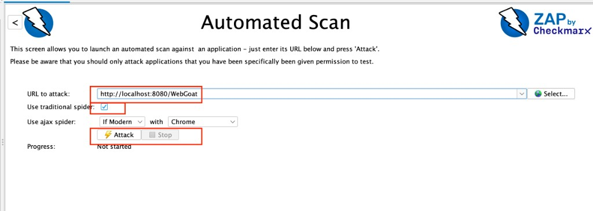
          <figcaption>Automated Scan · URL, spider y Attack</figcaption>
        </figure>
        <div class="steps">
          <div class="step">
            <div class="n"></div>
            <div>
              <h3>Abre el navegador de ZAP</h3>
              <p>
                En Quick Start pulsa <span class="kbd">Manual Explore</span>,
                escribe <span class="kbd">http://localhost:3000</span> y pulsa
                <span class="kbd">Launch Browser</span>. Todo el tráfico pasará
                por ZAP.
              </p>
              <figure class="shot">
                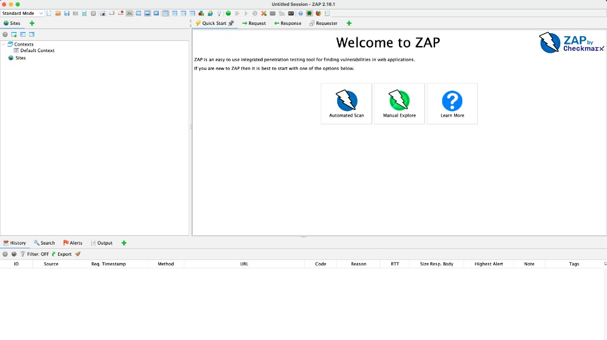
                <figcaption>Quick Start · Welcome to ZAP</figcaption>
              </figure>
              <figure class="shot">
                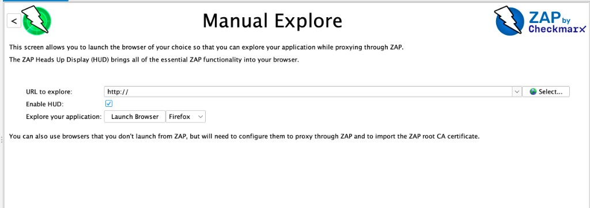
                <figcaption>Manual Explore · URL y Launch Browser</figcaption>
              </figure>
            </div>
          </div>
          <div class="step">
            <div class="n"></div>
            <div>
              <h3>Explora la aplicación</h3>
              <p>
                Navega manualmente: inicia sesión, entra a tickets, crea uno,
                abre el detalle. Cada petición alimenta el árbol de sitios
                (Sites) y aparece en <span class="kbd">History</span>.
              </p>
              <figure class="shot">
                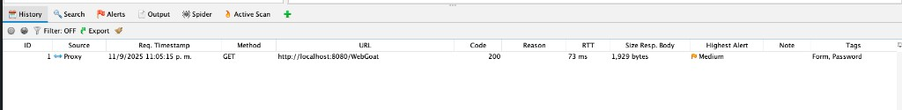
                <figcaption>History · tráfico que pasa por el proxy</figcaption>
              </figure>
            </div>
          </div>
          <div class="step">
            <div class="n"></div>
            <div>
              <h3>Lanza el Spider</h3>
              <p>
                Si no ves la pestaña, pulsa
                <span class="kbd">+</span> en la barra inferior y elige
                <span class="kbd">Spider</span> o
                <span class="kbd">AJAX Spider</span>. Luego clic derecho sobre
                el sitio → <span class="kbd">Attack → Spider</span>. Recorre
                enlaces automáticamente. Repite apuntando a la API en el 4000.
              </p>
              <figure class="shot">
                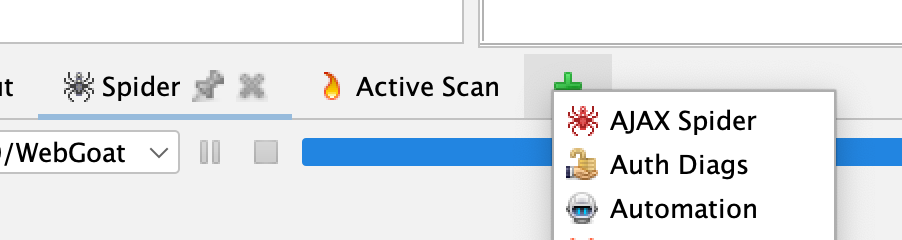
                <figcaption>Añadir pestañas · Spider y AJAX Spider</figcaption>
              </figure>
              <figure class="shot">
                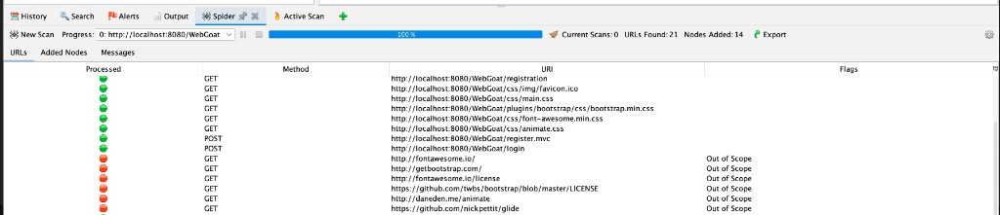
                <figcaption>Spider tradicional · URLs encontradas</figcaption>
              </figure>
              <figure class="shot">
                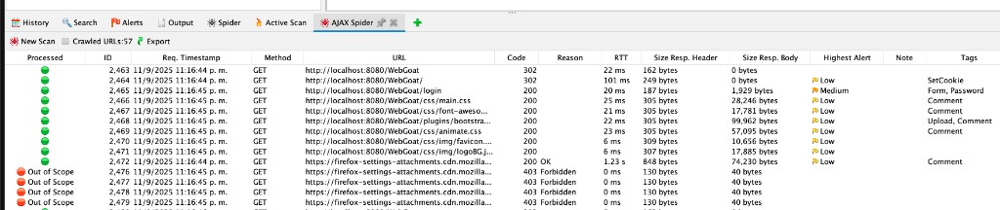
                <figcaption>
                  AJAX Spider · útil en apps con JavaScript
                </figcaption>
              </figure>
            </div>
          </div>
          <div class="step">
            <div class="n"></div>
            <div>
              <h3>Ejecuta el Active Scan</h3>
              <p>
                Clic derecho → <span class="kbd">Attack → Active Scan</span>.
                ZAP inyecta payloads y reporta alertas por severidad en la
                pestaña <span class="kbd">Alerts</span>.
              </p>
              <figure class="shot">
                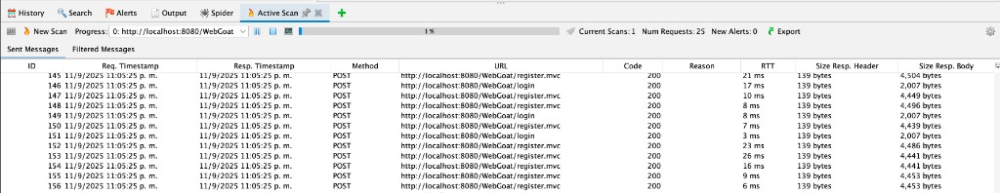
                <figcaption>Active Scan · peticiones en curso</figcaption>
              </figure>
            </div>
          </div>
          <div class="step">
            <div class="n"></div>
            <div>
              <h3>Revisa y correlaciona las alertas</h3>
              <p>
                Abre cada alerta (Alto/Medio/Bajo), lee la evidencia
                (request/response) y anótala. Aquí deberían salir XSS, cabeceras
                ausentes, cookie sin flags y fugas de información.
              </p>
              <figure class="shot">
                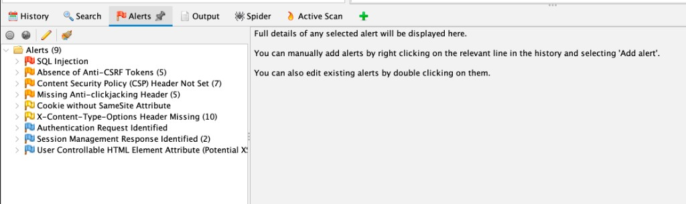
                <figcaption>
                  Alerts · haz clic en una alerta para ver request y response
                </figcaption>
              </figure>
            </div>
          </div>
          <div class="step">
            <div class="n"></div>
            <div>
              <h3>Exporta el reporte</h3>
              <p>
                <span class="kbd">Report → Generate Report</span>, formato HTML
                o PDF.
              </p>
              <figure class="shot">
                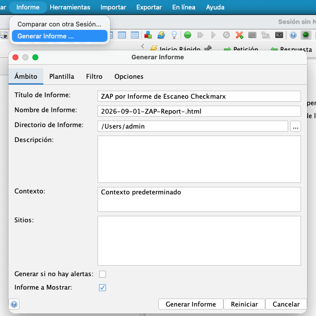
                <figcaption>Informe → Generar Informe · HTML o PDF</figcaption>
              </figure>
            </div>
          </div>
        </div>
        <div class="callout">
          <div class="t">Consejo</div>
          <p>
            El Active Scan no lo encuentra todo. Fallos de lógica como IDOR o
            mass assignment se cazan mejor a mano con Burp. Combina ambas
            herramientas.
          </p>
        </div>
      </div>

      <!-- BURP -->
      <div class="panel" data-panel="burp">
        <p class="intro">
          Burp Suite es un proxy pensado para el ataque manual. Capturas
          peticiones, las modificas y las reenvías para explotar lo que el
          escaneo automático no detecta bien: SQLi, IDOR, JWT y mass assignment.
        </p>
        <div class="steps">
          <div class="step">
            <div class="n"></div>
            <div>
              <h3>Configura el proxy y el certificado</h3>
              <p>
                Burp escucha en <span class="kbd">127.0.0.1:8080</span>. Lo más
                simple: el navegador embebido (<span class="kbd"
                  >Proxy → Intercept → Open Browser</span
                >). Si usas tu propio navegador, apunta el proxy del sistema a
                esa dirección. Para HTTPS instala el certificado CA desde
                <span class="kbd">http://burp</span>.
              </p>
              <figure class="shot">
                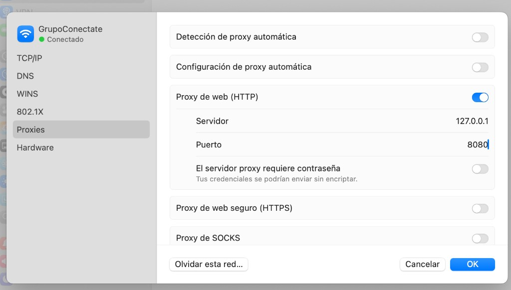
                <figcaption>
                  Proxy del sistema · 127.0.0.1:8080 (alternativa al navegador
                  embebido)
                </figcaption>
              </figure>
              <p style="margin-top: 14px">
                En <span class="kbd">Target → Scope</span> añade
                <span class="kbd">http://localhost:3000</span> y
                <span class="kbd">http://localhost:4000</span> para no mezclar
                tráfico de otros sitios.
              </p>
              <figure class="shot">
                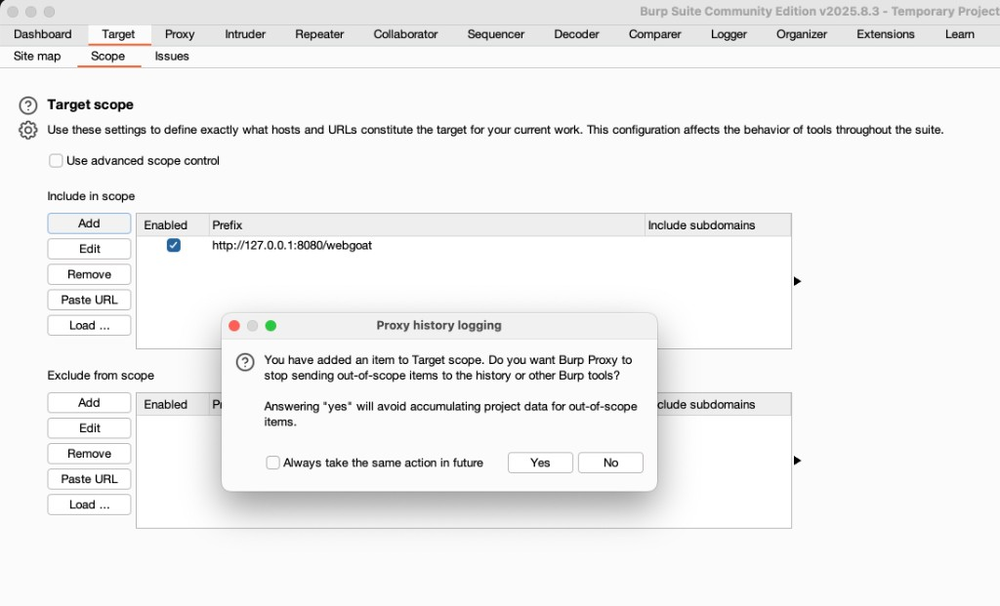
                <figcaption>
                  Target → Scope · incluye solo el CRM; responde Yes al diálogo
                </figcaption>
              </figure>
            </div>
          </div>
          <div class="step">
            <div class="n"></div>
            <div>
              <h3>Intercepta el login</h3>
              <p>
                Con <span class="kbd">Intercept is on</span>, inicia sesión.
                Burp captura el
                <span class="kbd">POST /api/auth/login</span> con el JSON de
                credenciales. Mientras navegas, el Dashboard y el Site map se
                van llenando solos.
              </p>
              <figure class="shot">
                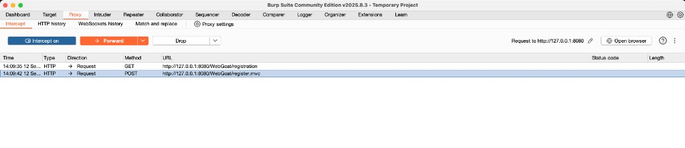
                <figcaption>
                  Proxy → Intercept · Intercept is on, Forward y Open browser
                </figcaption>
              </figure>
              <figure class="shot">
                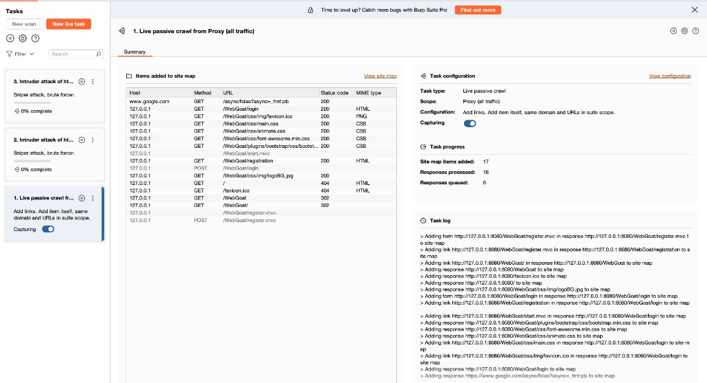
                <figcaption>
                  Dashboard · crawl pasivo mientras pasa el tráfico
                </figcaption>
              </figure>
              <figure class="shot">
                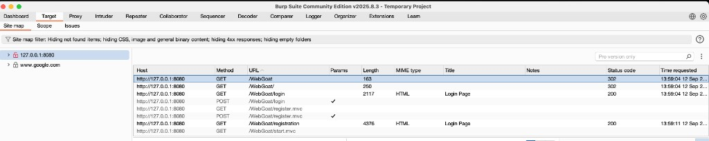
                <figcaption>
                  Target → Site map · mapa de la aplicación
                </figcaption>
              </figure>
            </div>
          </div>
          <div class="step">
            <div class="n"></div>
            <div>
              <h3>Envía a Repeater y prueba SQLi</h3>
              <p>
                Clic derecho →
                <span class="kbd">Send to Repeater</span> (Ctrl+R). Modifica el
                cuerpo y pulsa <span class="kbd">Send</span>:
              </p>
              <pre><code>POST /api/auth/login
{ "username": "admin' --", "password": "loquesea" }</code></pre>
              <p style="margin-top: 10px">
                Si obtienes un token sin la contraseña correcta, el login es
                vulnerable.
              </p>
              <p style="margin-top: 14px">
                En Repeater no hay placeholders mágicos: la
                <em>variable</em> es el campo que cambias entre un
                <span class="kbd">Send</span> y el siguiente. El resto del
                request (host, headers, token) se queda igual. En el panel
                <span class="kbd">Inspector</span> ves query y body como lista;
                edita ahí o en el raw.
              </p>
              <pre><code>GET /api/tickets/1
Authorization: Bearer &lt;token de viewer&gt;

# 1.ª vez: id = 1    → tu ticket
# 2.ª vez: id = 2    → ¿ticket de otro?
# 3.ª vez: id = 3    → sigue subiendo</code></pre>
              <p style="margin-top: 10px">
                Cambia solo el número, pulsa <span class="kbd">Send</span> y
                compara el JSON. Si ves tickets ajenos, hay IDOR. Para decenas
                de valores, pásalo a Intruder y marca el campo con
                <span class="kbd">§</span> (paso 5).
              </p>
              <!-- <figure class="shot">
                <div class="box">
                  <div class="l">Burp Repeater · SQLi en login</div>
                  <div class="s">Pendiente: Repeater con request y response</div>
                </div>
              </figure> -->
            </div>
          </div>
          <div class="step">
            <div class="n"></div>
            <div>
              <h3>Prueba IDOR y falsificación de JWT</h3>
              <p>
                Con un token de <span class="kbd">viewer</span>, cambia el id en
                <span class="kbd">GET /api/tickets/:id</span>. Decodifica el JWT
                en <span class="kbd">Inspector</span>, cambia el rol a
                <span class="kbd">admin</span> y reenvía. Si el servidor lo
                acepta, no verifica la firma.
              </p>
            </div>
          </div>
          <div class="step">
            <div class="n"></div>
            <div>
              <h3>Fuerza bruta con Intruder</h3>
              <p>
                Envía el login a <span class="kbd">Intruder</span>. En
                <span class="kbd">Positions</span> marca el valor de
                <span class="kbd">password</span>, tipo
                <span class="kbd">Sniper</span>. Carga una lista en
                <span class="kbd">Payloads</span> y lanza. Ordena por
                <span class="kbd">Status</span> o
                <span class="kbd">Length</span>: la respuesta distinta delata la
                contraseña.
              </p>
              <!-- <figure class="shot">
                <div class="box">
                  <div class="l">Burp Intruder · Positions + Resultados</div>
                  <div class="s">
                    Pendiente: Positions, Payloads y resultados
                  </div>
                </div>
              </figure> -->
            </div>
          </div>
        </div>
        <div class="callout">
          <div class="t">Edición Community</div>
          <p>
            El Intruder Community está limitado en velocidad. Para el
            laboratorio basta demostrar el ataque con una lista corta unos 100
            passwords.
          </p>
        </div>
      </div>

      <!-- CVSS -->
      <div class="panel" data-panel="cvss">
        <p class="intro">
          CVSS traduce una vulnerabilidad a un número de 0 a 10 para poder
          priorizar. El Base Score se compone de ocho métricas que describen
          cómo se explota y qué impacto tiene.
        </p>
        <div class="tbl-wrap" style="margin-top: 8px">
          <table>
            <thead>
              <tr>
                <th>Métrica</th>
                <th>Valores</th>
                <th>Pregúntate</th>
              </tr>
            </thead>
            <tbody>
              <tr>
                <td>
                  <span class="k">AV</span>
                  <div class="n">Attack Vector</div>
                </td>
                <td>N · A · L · P</td>
                <td>
                  ¿Desde dónde se explota? Cuanto más remoto, mayor riesgo.
                </td>
              </tr>
              <tr>
                <td>
                  <span class="k">AC</span>
                  <div class="n">Attack Complexity</div>
                </td>
                <td>L · H</td>
                <td>
                  ¿Requiere condiciones especiales fuera del control del
                  atacante?
                </td>
              </tr>
              <tr>
                <td>
                  <span class="k">PR</span>
                  <div class="n">Privileges Required</div>
                </td>
                <td>N · L · H</td>
                <td>¿Qué privilegios necesita antes de explotar?</td>
              </tr>
              <tr>
                <td>
                  <span class="k">UI</span>
                  <div class="n">User Interaction</div>
                </td>
                <td>N · R</td>
                <td>¿Necesita que una víctima haga algo?</td>
              </tr>
              <tr>
                <td>
                  <span class="k">S</span>
                  <div class="n">Scope</div>
                </td>
                <td>U · C</td>
                <td>¿El impacto trasciende al componente vulnerable?</td>
              </tr>
              <tr>
                <td>
                  <span class="k">C</span>
                  <div class="n">Confidentiality</div>
                </td>
                <td>N · L · H</td>
                <td>¿Cuánta información se expone?</td>
              </tr>
              <tr>
                <td>
                  <span class="k">I</span>
                  <div class="n">Integrity</div>
                </td>
                <td>N · L · H</td>
                <td>¿Cuánto se pueden modificar los datos?</td>
              </tr>
              <tr>
                <td>
                  <span class="k">A</span>
                  <div class="n">Availability</div>
                </td>
                <td>N · L · H</td>
                <td>¿Se afecta la disponibilidad del servicio?</td>
              </tr>
            </tbody>
          </table>
        </div>
        <h3 style="margin-top: 30px">
          Ejemplo trabajado · SQL Injection en el login
        </h3>
        <p
          style="
            color: var(--muted);
            font-size: 14.5px;
            margin: 8px 0 12px;
            max-width: 64ch;
          "
        >
          Atacante remoto, sin privilegios ni interacción de la víctima, que lee
          y altera la base de datos. Impacto alto en confidencialidad e
          integridad; disponibilidad sin afectar:
        </p>
        <pre><code>CVSS:3.1/AV:N/AC:L/PR:N/UI:N/S:U/C:H/I:H/A:N   →   Base Score 8.1 (Alta)</code></pre>
        <div class="metric-grid">
          <div class="metric">
            <div class="k">AV:N</div>
            <div class="d">Se explota por red</div>
          </div>
          <div class="metric">
            <div class="k">AC:L</div>
            <div class="d">Sin condiciones especiales</div>
          </div>
          <div class="metric">
            <div class="k">PR:N</div>
            <div class="d">No requiere autenticación</div>
          </div>
          <div class="metric">
            <div class="k">UI:N</div>
            <div class="d">No requiere a la víctima</div>
          </div>
          <div class="metric">
            <div class="k">S:U</div>
            <div class="d">Mismo alcance</div>
          </div>
          <div class="metric">
            <div class="k">C:H</div>
            <div class="d">Lee toda la BD</div>
          </div>
          <div class="metric">
            <div class="k">I:H</div>
            <div class="d">Puede alterar datos</div>
          </div>
          <div class="metric">
            <div class="k">A:N</div>
            <div class="d">No afecta disponibilidad</div>
          </div>
        </div>
        <h3 style="margin-top: 30px">Escala de severidad</h3>
        <div class="sev-grid" style="margin-top: 14px">
          <div class="sev">
            <div class="lab" style="color: var(--faint)">None</div>
            <div class="rng">0.0</div>
          </div>
          <div class="sev">
            <div class="lab" style="color: var(--ok)">Low</div>
            <div class="rng">0.1–3.9</div>
          </div>
          <div class="sev">
            <div class="lab" style="color: var(--med)">Medium</div>
            <div class="rng">4.0–6.9</div>
          </div>
          <div class="sev">
            <div class="lab" style="color: var(--high)">High</div>
            <div class="rng">7.0–8.9</div>
          </div>
          <div class="sev">
            <div class="lab" style="color: var(--crit)">Critical</div>
            <div class="rng">9.0–10.0</div>
          </div>
        </div>
        <div class="callout" style="margin-top: 26px">
          <div class="t">Usa la calculadora oficial</div>
          <p>
            No calcules el score a mano. Arma el vector en la calculadora de
            FIRST, copia el vector string y el número a tu informe, y
            complementa con una matriz Impacto × Probabilidad 3×3 para priorizar
            según tu proyecto.
          </p>
        </div>
        <a
          class="btn btn-primary"
          href="https://www.first.org/cvss/calculator/3.1"
          target="_blank"
          rel="noopener noreferrer"
          >Abrir calculadora CVSS v3.1</a
        >
        <figure class="shot" style="margin-top: 18px">
          <div class="box">
            <div class="l">Calculadora CVSS v3.1 · FIRST</div>
            <div class="s">Reemplaza por tu captura real</div>
          </div>
        </figure>
      </div>
    </div>
  </section>

  <!-- RETOS -->
  <section id="retos">
    <div class="wrap">
      <div class="sec-head">
        <span class="eyebrow">Tablero de retos</span>
        <h2>Las vulnerabilidades por descubrir</h2>
      </div>
      <p class="lead">
        Cada reto trae pistas progresivas y un vector CVSS de ejemplo.
        Descúbrelos con tus herramientas y documéntalos en tu informe.
      </p>
      <div class="board-note">
        El payload exacto y el código de mitigación no están aquí a propósito:
        viven en la <strong>guía del instructor</strong>, aparte. El objetivo es
        que descubras cada fallo por tu cuenta.
      </div>
      <div id="board"></div>
    </div>
  </section>

  <section>
    <div class="wrap">
      <div class="cta">
        <div>
          <h3 style="font-size: 1.2rem">¿Listo para empezar?</h3>
          <p>Levanta el CRM, inicia sesión y comienza a interceptar tráfico.</p>
        </div>
        <a class="btn btn-primary" href="#instalar">Ver cómo levantarlo</a>
      </div>
    </div>
  </section>
</main>

<footer>
  <div class="wrap frow">
    <div class="fbrand">
      
      <span>Desarrollo de Software Seguro</span>
    </div>
  </div>
</footer>

<script>
  // Tabs de herramientas
  const tabs = document.querySelectorAll(".tab");
  tabs.forEach((t) =>
    t.addEventListener("click", () => {
      tabs.forEach((x) => x.setAttribute("aria-selected", String(x === t)));
      document
        .querySelectorAll(".panel")
        .forEach((p) =>
          p.setAttribute(
            "data-active",
            p.dataset.panel === t.dataset.tab ? "1" : "0",
          ),
        );
    }),
  );

  // Datos de los retos (sin solucionario — eso está en la guía del instructor)
  const challenges = [
    {
      title: "Bypass de login por SQL Injection",
      diff: "Facil",
      diffL: "Fácil",
      owasp: "A05:2025 Injection",
      cwe: "CWE-89",
      tool: "Burp Suite",
      where: "POST /api/auth/login",
      score: "8.1",
      sev: "Alta",
      vector: "CVSS:3.1/AV:N/AC:L/PR:N/UI:N/S:U/C:H/I:H/A:N",
      sum: "La consulta de autenticación se arma concatenando el usuario y la contraseña en el SQL. Es posible iniciar sesión sin credenciales válidas.",
      why: "Datos no confiables del usuario se interpretan como parte de una sentencia SQL. CWE-89 (SQL Injection) pertenece a la categoría Injection del OWASP Top 10.",
      hints: [
        'El campo "usuario" termina dentro de una consulta SQL. ¿Qué pasa si escribes una comilla simple?',
        "Comenta el resto de la consulta con dos guiones y fuerza una condición verdadera. Intercepta con Burp y usa Repeater para iterar.",
      ],
    },
    {
      title: "XSS reflejado y almacenado en tickets",
      diff: "Media",
      diffL: "Media",
      owasp: "A05:2025 Injection",
      cwe: "CWE-79",
      tool: "ZAP + Burp",
      where: "/tickets?q= y campos del ticket",
      score: "7.6",
      sev: "Alta",
      vector: "CVSS:3.1/AV:N/AC:L/PR:L/UI:R/S:C/C:H/I:L/A:N",
      sum: "El término de búsqueda y los campos de un ticket se renderizan como HTML sin sanitizar. Se puede inyectar y ejecutar JavaScript arbitrario.",
      why: "Entrada del usuario enviada al navegador sin codificar permite ejecutar scripts en el contexto de la víctima. CWE-79 (XSS) pertenece a Injection.",
      hints: [
        "Busca un texto con etiquetas HTML. ¿Se muestran como texto o como HTML real?",
        "Prueba una etiqueta que dispare JavaScript al fallar la carga de una imagen (evita comillas simples para no romper el SQL). ZAP lo detecta en el Active Scan.",
      ],
    },
    {
      title: "Acceso a tickets de otros usuarios (IDOR)",
      diff: "Facil",
      diffL: "Fácil",
      owasp: "A01:2025 Broken Access Control",
      cwe: "CWE-639",
      tool: "Burp Suite",
      where: "GET/PUT /api/tickets/:id",
      score: "8.1",
      sev: "Alta",
      vector: "CVSS:3.1/AV:N/AC:L/PR:L/UI:N/S:U/C:H/I:H/A:N",
      sum: "No se valida la propiedad ni el rol al leer o editar un ticket por su id. Un usuario de solo lectura puede ver y modificar cualquier ticket.",
      why: "Se accede a un objeto por su identificador sin comprobar autorización (Insecure Direct Object Reference). Es el núcleo de Broken Access Control.",
      hints: [
        "Inicia sesión con la cuenta de menor privilegio y observa la URL de un ticket. ¿Qué pasa si cambias el número de id?",
        "En Burp Repeater cambia el id por otros valores con ese mismo token. Prueba también el método PUT para editarlos.",
      ],
    },
    {
      title: "Falsificación de token JWT (firma no verificada)",
      diff: "Dificil",
      diffL: "Difícil",
      owasp: "A07:2025 Authentication Failures",
      cwe: "CWE-347",
      tool: "Burp Suite",
      where: "Middleware de autenticación",
      score: "9.8",
      sev: "Crítica",
      vector: "CVSS:3.1/AV:N/AC:L/PR:N/UI:N/S:U/C:H/I:H/A:N",
      sum: "El servidor decodifica el JWT pero no verifica su firma. Cualquiera puede forjar un token con el rol que quiera.",
      why: "No se valida la firma criptográfica del token (Improper Verification of Cryptographic Signature), lo que rompe la autenticación y permite suplantar identidades.",
      hints: [
        "Un JWT tiene tres partes en base64 separadas por puntos. ¿El servidor comprueba la firma o solo decodifica el contenido?",
        "Modifica la parte del payload para elevar tu rol y observa si el servidor sigue aceptando el token.",
      ],
    },
    {
      title: "Exposición de hashes de contraseña (MD5)",
      diff: "Media",
      diffL: "Media",
      owasp: "A04:2025 Cryptographic Failures",
      cwe: "CWE-327",
      tool: "ZAP + Burp",
      where: "GET /api/users",
      score: "6.5",
      sev: "Media",
      vector: "CVSS:3.1/AV:N/AC:L/PR:L/UI:N/S:U/C:H/I:N/A:N",
      sum: "El endpoint de usuarios devuelve el hash de cada cuenta, y el hash es MD5 sin salt, trivial de romper.",
      why: "Algoritmo de hash roto/obsoleto (MD5) y exposición de datos sensibles. CWE-327 dentro de Cryptographic Failures.",
      hints: [
        "Revisa la respuesta JSON del listado de usuarios. ¿Qué campos aparecen que jamás deberías ver desde el cliente?",
        "Toma un hash y búscalo en un servicio de crackeo de MD5 o pásalo por una lista de contraseñas comunes.",
      ],
    },
    {
      title: "Cabeceras de seguridad ausentes y cookie insegura",
      diff: "Facil",
      diffL: "Fácil",
      owasp: "A02:2025 Security Misconfiguration",
      cwe: "CWE-1004",
      tool: "OWASP ZAP",
      where: "Respuestas HTTP",
      score: "4.7",
      sev: "Media",
      vector: "CVSS:3.1/AV:N/AC:H/PR:N/UI:R/S:C/C:L/I:L/A:N",
      sum: "Faltan CSP, X-Frame-Options, X-Content-Type-Options y HSTS. La cookie de sesión no tiene HttpOnly, Secure ni SameSite.",
      why: "Configuración insegura. La cookie sin HttpOnly (CWE-1004) es robable por JavaScript; sin las cabeceras hay clickjacking y sniffing de tipo.",
      hints: [
        "Mira las cabeceras de respuesta (en ZAP o con una petición cualquiera). ¿Ves Content-Security-Policy o X-Frame-Options?",
        "El Passive Scan de ZAP marca estas ausencias. Revisa también los atributos de la cookie de sesión.",
      ],
    },
    {
      title: "CORS permisivo con credenciales",
      diff: "Media",
      diffL: "Media",
      owasp: "A02:2025 Security Misconfiguration",
      cwe: "CWE-942",
      tool: "Burp Suite",
      where: "Configuración CORS de la API",
      score: "6.1",
      sev: "Media",
      vector: "CVSS:3.1/AV:N/AC:L/PR:N/UI:R/S:C/C:L/I:L/A:N",
      sum: "La API refleja cualquier Origin y permite enviar credenciales, habilitando peticiones cross-origin desde cualquier sitio.",
      why: "Política de origen cruzado excesivamente permisiva (CWE-942). Con credenciales, un sitio malicioso puede actuar en nombre del usuario.",
      hints: [
        "Observa el header Access-Control-Allow-Origin de la respuesta. ¿Refleja tu Origin o está fijo?",
        "Envía una petición con un Origin arbitrario y verifica que se refleja junto a Allow-Credentials.",
      ],
    },
    {
      title: "Escalada de privilegios por mass assignment",
      diff: "Media",
      diffL: "Media",
      owasp: "A08:2025 Data Integrity Failures",
      cwe: "CWE-915",
      tool: "Burp Suite",
      where: "POST /api/users",
      score: "8.1",
      sev: "Alta",
      vector: "CVSS:3.1/AV:N/AC:L/PR:L/UI:N/S:U/C:H/I:H/A:N",
      sum: "La creación de usuarios acepta el campo de rol enviado por el cliente sin lista blanca ni verificación. Cualquiera puede crearse una cuenta con permisos elevados.",
      why: "Asignación masiva de atributos controlados por el cliente sin filtrar (CWE-915). Compromete integridad y controles de acceso.",
      hints: [
        "Al crear un usuario, ¿qué campos acepta el cuerpo JSON? Prueba a añadir uno que no está en el formulario.",
        "Añade un campo de rol elevado al cuerpo de la petición con un token de bajo privilegio y observa el resultado.",
      ],
    },
    {
      title: "Login sin límite de intentos (fuerza bruta)",
      diff: "Facil",
      diffL: "Fácil",
      owasp: "A07:2025 Authentication Failures",
      cwe: "CWE-307",
      tool: "Burp Suite",
      where: "POST /api/auth/login",
      score: "5.3",
      sev: "Media",
      vector: "CVSS:3.1/AV:N/AC:L/PR:N/UI:N/S:U/C:L/I:N/A:N",
      sum: "No hay rate limiting ni bloqueo de cuenta. Se pueden probar miles de contraseñas automáticamente.",
      why: "Ausencia de restricción de intentos de autenticación (CWE-307): habilita fuerza bruta y credential stuffing.",
      hints: [
        "¿Qué pasa si fallas la contraseña muchas veces seguidas? ¿Te bloquea o te ralentiza?",
        "Usa Burp Intruder sobre el campo de contraseña con una lista y observa las diferencias en la respuesta.",
      ],
    },
    {
      title: "Mensajes de error verbosos (fuga de información)",
      diff: "Facil",
      diffL: "Fácil",
      owasp: "A02:2025 Security Misconfiguration",
      cwe: "CWE-209",
      tool: "Burp Suite",
      where: "Manejo de errores de la API",
      score: "5.3",
      sev: "Media",
      vector: "CVSS:3.1/AV:N/AC:L/PR:N/UI:N/S:U/C:L/I:N/A:N",
      sum: "Ante un error, la API devuelve la consulta SQL ejecutada y/o el stack trace completo, revelando estructura interna.",
      why: "Mensajes de error con información sensible (CWE-209). Facilitan mapear el backend y afinar inyecciones.",
      hints: [
        "Rompe el login enviando una comilla simple sin cerrar. ¿Qué te responde el servidor?",
        "La respuesta incluye la consulta y el detalle del motor. Úsalo para refinar tu inyección.",
      ],
    },
  ];

  const sevClass = { Crítica: "s-crit", Alta: "s-alta", Media: "s-media" };
  const esc = (s) =>
    s.replace(/&/g, "&amp;").replace(/</g, "&lt;").replace(/>/g, "&gt;");

  document.getElementById("board").innerHTML = challenges
    .map(
      (c, i) => `
    <div class="challenge" data-i="${i}" open-state="0">
      <button class="ch-head" aria-expanded="false">
        <span class="ch-mark">${String(i + 1).padStart(2, "0")}</span>
        <div class="ch-main">
          <div class="ch-title">${esc(c.title)} <span class="pill d-${c.diff}">${c.diffL}</span></div>
          <div class="ch-meta"><span>${esc(c.owasp)}</span><span class="cwe">${c.cwe}</span><span>· ${c.tool}</span></div>
        </div>
        <div class="ch-score"><div class="num ${sevClass[c.sev]}">${c.score}</div><div class="cv">CVSS · ${c.sev}</div></div>
      </button>
      <div class="ch-body">
        <p class="sum">${esc(c.sum)}</p>
        <div class="kv-grid">
          <div class="kv"><div class="l">Dónde</div><div class="v">${esc(c.where)}</div></div>
          <div class="kv"><div class="l">Vector CVSS v3.1</div><div class="v">${esc(c.vector)}</div></div>
        </div>
        <div class="why"><div class="l">Por qué esta categoría</div><p>${esc(c.why)}</p></div>
        <div class="hintarea" data-level="0"></div>
      </div>
    </div>`,
    )
    .join("");

  document.querySelectorAll(".challenge").forEach((el) => {
    const c = challenges[+el.dataset.i];
    const head = el.querySelector(".ch-head");
    head.addEventListener("click", () => {
      const open = el.getAttribute("open-state") === "1";
      el.setAttribute("open-state", open ? "0" : "1");
      head.setAttribute("aria-expanded", String(!open));
    });
    const area = el.querySelector(".hintarea");
    const draw = () => {
      const lvl = +area.dataset.level;
      let html = "";
      if (lvl === 0) html = `<button class="hintbtn">Mostrar pista</button>`;
      else {
        html = `<div class="hint"><b>Pista 1. </b>${esc(c.hints[0])}</div>`;
        if (lvl >= 2)
          html += `<div class="hint"><b>Pista 2. </b>${esc(c.hints[1])}</div>`;
        else html += `<button class="morehint">Necesito otra pista →</button>`;
      }
      area.innerHTML = html;
      const hb = area.querySelector(".hintbtn");
      if (hb)
        hb.onclick = () => {
          area.dataset.level = "1";
          draw();
        };
      const mh = area.querySelector(".morehint");
      if (mh)
        mh.onclick = () => {
          area.dataset.level = "2";
          draw();
        };
    };
    draw();
  });
</script>
